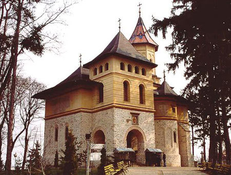
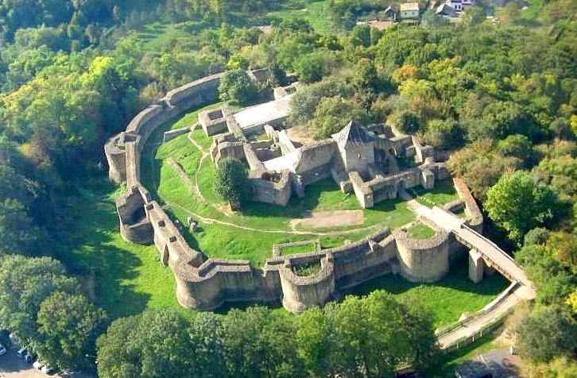
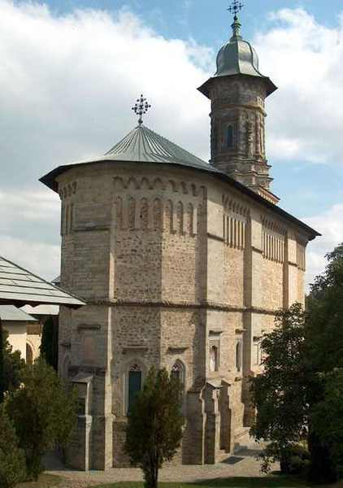

Like Erol Ozan said Some beautiful paths can’t be discovered without getting lost
,so, let's take a look at their opinions about the city.
- The blogger, Anna Glik, from
aviontourism
said:

- In the heart of Bukovina, one of the most historically rich regions of Romania, Suceava has many noteworthy examples of its ancient past, such as famous painted monasteries and ancient buildings, as well as unspoilt nature - it is not by chance that Bukovina translates as “country covered by beech forests”. Despite being targeted for a long time by the Ottomans, Suceava was never conquered thanks to the impressive fortifications built in the fifteenth century by Stephen the Great - still existing - which tower over the hills and offer a breathtaking view of the city: for all of his life this brave king defended his state from the expansionist ambitions of the Kingdom of Hungary, Poland and the Ottoman Empire. In 1775 the city became part of the Habsburg Empire, where it garnered great importance as border city, since the border with Romania, of which it was not yet part, passed a few kilometres from the city; it returned to Romania at the end of World War I.
- Suceava is home to many monuments, including beautiful churches: the fourteenth century Church of Mirauti, the oldest of the city, where the princes of Moldova were crowned; the Church of St. George, which was declared a UNESCO World Heritage Site along with the painted monasteries of Bukovina: the church is painted inside and outside with stunning scenes from the Old and New Testament. There are many monuments that tell stories of the past: the Ethnographic Museum of Bukovina, which houses a rich collection of folk costumes, household tools, local crafts, and is located near Piazza December 22, in the heart of the city of Suceava; Museum village Bukovina, which features open-air displays of examples of rural architecture; the History Museum of Bukovina, which displays weapons, coins, ancient documents, all gathered in the Museum Complex of Bukovina; as well as the Princely Inn, a place where nobility (hence the name) once relaxed after hunting in the forests. A stroll around the city immerses visitors in the culture and history of the Romanian people, but above all, Suceava is the starting point from which to admire the much renowned painted monasteries of Bukovina, the so-called 'monastic archipelago' of Byzantine masterpieces, unique to this world, which are also painted externally with bright colours ranging from yellow ochre to turquoise blue.
- An anonymus person said:
- The fortress is one of the tourist objectives that arouses the interest of Romanian and foreign tourists, especially after the rehabilitation and consolidation works carried out in 2010-2015. The tourist will discover the history of Moldova, the Citadel of the Seat, the genealogy of the Musatins and other historical data in a modern way, through written and audio-video informative material. Once it gets dark, on the exterior and interior walls, you can watch a special show, in which scenes of battle or from everyday life in the fortress are rendered in black and white images and sounds. The Royal Inn is one of the oldest buildings in the city, with a history of about 500 years, which presents the visitor with the image of the seventeenth century inn, which housed foreign governors, merchants and distinguished guests, but also the image of the hunting inn in during the Habsburg occupation. Today, the building houses the Ethnography Section of the "Museum of Bucovina" Complex.
- Dragomirna Monastery, dedicated to the Descent of the Holy Spirit, is unique, not only in Moldova, but in all of Romania and even in the Orthodox world, due to its unusual proportions, which gives the impression of a ship, the ancient symbol of The Christian Church. Slender, monumental and sober, the church impresses with its twisted belt, a motif that we also find inside the church, and with the stone lacework of the tower, which contains over 1000 vegetal, floral and geometric motifs, of Caucasian origin. The Church of the Cocoons (Beizadelelor), also known as the Church of the Ladies, is located in the immediate vicinity of the Royal Court, of which it was once a part. It was founded in 1643 by Vasile Lupu and served as a chapel of the Royal Court. Here the members of the ruler's family attended the service, especially his children ("cocoons"). Tradition says that the church, with the smallest tower in Moldova, was painted both inside and outside by the cocoons of the ruler and other local dignitaries of the Royal Court of Suceava, a unique artistic gesture in the Middle Ages, which denotes openness, care for the education of young people and innovative ideas from the ruler's court.
 
<------------------------------ Suceava Citadel
Dragomirna Monastery --------------------------->